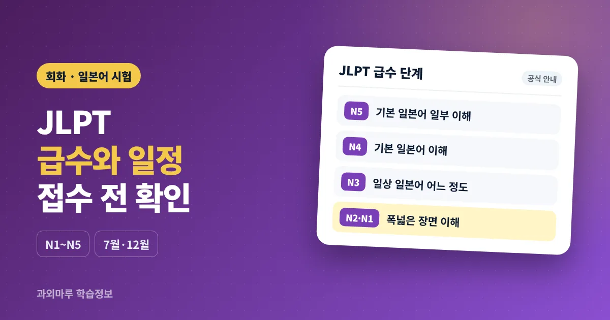

- 급수는 N1~N5 다섯 단계, 숫자가 클수록 쉬움(N5가 입문)
- 공식 사이트 기준 2026년 시험일은 7월 5일(일)·12월 6일(일)
- JLPT는 언어지식·독해·청해를 보는 시험이라 말하기는 따로 연습
JLPT는 어떤 시험인가요?
JLPT(일본어능력시험)는 일본어를 모국어로 하지 않는 사람의 일본어 실력을 측정하는 시험으로, 국제교류기금과 일본국제교육지원협회가 주최합니다. 급수는 N1부터 N5까지 다섯 단계이며, 학생이 일본어 공부의 중간 목표로 삼기 좋은 시험입니다.
급수(레벨)는 응시자가 직접 골라 접수하는 시험 단계를 말합니다. 하나의 시험지로 점수에 따라 등급을 매기는 방식이 아니라, 응시자가 고른 급수의 시험을 보고 합격·불합격을 판정받는 방식입니다. 그래서 어느 급수에 접수할지 고르는 것이 준비의 첫 단계가 됩니다.
공식 사이트는 N4·N5를 주로 교실에서 배우는 기본 일본어를, N1·N2를 실제 생활의 폭넓은 장면에서 쓰는 일본어를 이해하는 수준으로 설명하고, N3는 두 단계를 잇는 다리 역할의 급수로 소개합니다. 시험 영역은 언어지식(문자·어휘·문법), 독해, 청해(듣기)로 이루어져 있으며, 말하기와 쓰기 시험은 따로 없습니다.
학교 제2외국어 시간이나 개인 공부로 일본어를 시작한 학생이라면, JLPT는 지금 공부가 어느 수준까지 왔는지 확인하는 기준으로 활용할 수 있습니다. 일본어를 처음 시작하는 순서는 기초 일본어 회화 시작하는 법에 따로 정리해 두었습니다.
JLPT 급수별 수준은 어떻게 다른가요?
JLPT 급수는 숫자가 클수록 쉬워서 N5가 입문 단계, N1이 가장 높은 단계입니다. 공식 사이트의 급수별 설명을 요약하면 아래 표와 같습니다.
| 급수 | 공식 안내의 수준 설명 (요약) |
|---|---|
| N5 | 기본적인 일본어를 어느 정도 이해. 히라가나·가타카나와 기본 한자로 쓴 짧은 글을 읽는 수준 |
| N4 | 기본적인 일본어를 이해. 천천히 말하는 일상 대화를 거의 알아듣는 수준 |
| N3 | 일상적인 장면의 일본어를 어느 정도 이해. N1·N2와 N4·N5를 잇는 단계 |
| N2 | 일상적인 장면의 일본어와, 폭넓은 장면의 일본어를 어느 정도 이해 |
| N1 | 폭넓은 장면의 일본어를 이해. 신문 사설처럼 논리적으로 복잡하고 추상적인 글을 읽는 수준 |
표는 공식 설명을 짧게 줄인 것이므로, 접수 전에는 공식 사이트의 급수별 설명과 예제 문제를 직접 보고 비교해 보는 것이 좋습니다.
급수별 시험 영역과 시간
공식 사이트에 안내된 영역별 시험 시간은 다음과 같습니다. N3~N5는 언어지식이 어휘와 문법·독해로 나뉘고, N1·N2는 언어지식과 독해를 한 시간에 함께 봅니다.
| 급수 | 언어지식·독해 | 청해 |
|---|---|---|
| N1 | 언어지식(문자·어휘·문법)·독해 110분 | 55분 |
| N2 | 언어지식(문자·어휘·문법)·독해 105분 | 50분 |
| N3 | 언어지식(문자·어휘) 30분 + 언어지식(문법)·독해 70분 | 40분 |
| N4 | 언어지식(문자·어휘) 25분 + 언어지식(문법)·독해 55분 | 35분 |
| N5 | 언어지식(문자·어휘) 20분 + 언어지식(문법)·독해 40분 | 30분 |
공식 사이트는 영역별 시간이 바뀔 수 있고, 청해 시간은 음성 길이에 따라 조금 달라질 수 있다고 안내합니다. 합격 여부는 점수 기준에 따라 판정되므로, 급수별 합격 기준은 공식 사이트의 '합격 판정' 안내에서 확인해 주세요.
JLPT는 언제 보나요? 시험 일정 확인 방법
JLPT 일정은 1년에 두 번, 7월과 12월에 한 번씩입니다. 공식 사이트 기준 2026년 시험일은 1회 7월 5일(일), 2회 12월 6일(일)이며, 해외 도시 가운데에는 7월이나 12월 중 한 번만 시행하는 곳도 있습니다.
공식 사이트의 해외 시행 도시 목록에는 서울·부산·제주 등 국내 도시가 올라 있으며, 국내에서도 7월과 12월 시험이 시행됩니다. 국내 접수와 시험 운영은 지역별 실시위원회가 맡으며, 서울·제주 지역과 부산·대구·경남·경북 지역의 접수 사이트가 나뉘어 있습니다. 거주 지역에 맞는 시행기관 공고를 먼저 확인해 두면 접수 기간을 놓치지 않을 수 있습니다.
| 항목 | 2026년 2회(12월) 시험 기준 |
|---|---|
| 시험일 | 12월 6일(일) |
| 원서 접수 | 9월에 일반 접수, 9월 말~10월 초 추가 접수 (모두 마감) |
| 수험표 출력 | 10월 말부터 시험 당일까지 |
| 입실 마감 | N1·N2 오전 9시 40분, N3·N4·N5 오후 1시 40분 |
| 결과 발표 | 2027년 1월 말 온라인 발표 예정 |
표는 2026년 12월 시험에 대한 국내 보도 내용을 정리한 것이며, 실제 일정과 세부 사항은 시행기관 공고가 기준입니다. 2027년 시험일과 접수 기간은 이 글을 쓰는 시점(2026년 11월)에 공식 사이트에 아직 안내되지 않았으므로, 7월 시험을 목표로 한다면 봄부터 시행기관 공지를 확인해 주세요. 국내 보도에 따르면 2026년 12월 시험의 일반 접수는 시험 약 석 달 전에 진행되었습니다.
JLPT 몇 급부터 시작하면 되나요?
JLPT 급수는 지금 실력으로 문제를 풀어 봤을 때 '조금 어렵지만 몇 달 준비하면 될 것 같은' 급수로 고르는 것이 좋습니다. 처음 응시하는 학생은 히라가나·가타카나와 기본 문형을 익힌 뒤 N5나 N4부터 시작하는 경우가 많습니다.
급수를 너무 높게 잡으면 준비 기간 내내 모르는 내용이 많아 공부가 끊기기 쉽고, 너무 낮게 잡으면 시험 준비가 실력 향상으로 이어지지 않습니다. 공식 사이트에 공개된 예제 문제를 풀어 보고 정답률과 걸린 시간을 확인하면 급수를 고르는 데 도움이 됩니다.
| 지금 상태 (예시) | 고려할 급수 (예시) | 준비할 때 중점 |
|---|---|---|
| 가나를 막 익힌 단계 | N5 | 기본 어휘, 짧은 문장 읽기, 천천히 말하는 대화 듣기 |
| 기본 문형으로 자기소개 가능 | N4 | 일상 주제 어휘, 동사 활용, 짧은 글 독해 |
| 쉬운 일상 글을 사전 없이 읽음 | N3 | 한자 어휘 확장, 문법 표현, 긴 대화 청해 |
| N3 수준을 여유 있게 넘김 | N2 | 긴 글 독해 속도, 자연스러운 속도의 청해 |
표의 기준은 이해를 돕기 위한 예시이며, 실제 급수 선택은 예제 문제 결과와 남은 준비 기간을 함께 보고 정하는 것이 좋습니다. 학교마다 제2외국어 수업 범위가 다르므로, 학교 수업만으로 어느 급수에 해당하는지는 일률적으로 말하기 어렵습니다.
JLPT 접수 전 확인할 것은 무엇인가요?
JLPT 접수 전에는 시험일과 접수 기간, 시험 지역, 사진·신분증 같은 준비물, 그리고 시험 목적을 먼저 확인하면 됩니다. 시험장마다 정원이 있으므로 접수 시작일을 미리 알아 두고 일찍 접수하는 편이 안전합니다.
- 시험일과 접수 기간 — 거주 지역 시행기관 공고에서 일반 접수와 추가 접수 기간을 확인합니다.
- 응시 급수 — 예제 문제를 풀어 보고 준비 기간 안에 도달할 수 있는 급수를 고릅니다.
- 시험 지역·시험장 — 서울·제주 지역과 부산·대구·경남·경북 지역은 접수 사이트가 다르므로 지역을 확인합니다.
- 사진·신분증 — 접수용 사진 규격과, 시험 당일 가져갈 신분증 종류를 공고에서 확인합니다. 학생은 인정되는 신분증이 무엇인지 미리 챙겨 두는 것이 좋습니다.
- 시험 목적 — 실력 점검인지, 학교·대외 활동 기록용인지에 따라 목표 급수와 응시 시기가 달라집니다.
응시료와 환불 규정, 장애 등으로 시험 편의 제공이 필요한 경우의 신청 방법도 시행기관 공고에 안내됩니다. 공고 내용은 회차마다 달라질 수 있으므로 지난 회차 정보를 그대로 믿기보다 이번 회차 공고를 확인해 주세요.
JLPT 준비와 일본어 회화 공부는 어떻게 함께 할까요?
JLPT는 말하기를 평가하지 않으므로, 시험 준비만 하면 읽고 듣는 실력은 늘어도 말하기는 따로 늘지 않을 수 있습니다. 같은 어휘와 문형을 문제로 풀고 입으로도 말해 보는 방식으로 묶으면 두 목표를 함께 준비할 수 있습니다.
수업에서 자주 보는 경우는 문법 문제는 잘 맞히는데 같은 문형으로 직접 문장을 만들지 못하는 학생입니다. 문제를 풀 때는 보기를 고르기만 하면 되지만, 말할 때는 단어와 활용을 스스로 떠올려야 하기 때문입니다. 반대로 소리 내어 말하는 연습을 하면 청해 영역에서 들리는 표현이 늘어나는 데도 도움이 됩니다.
4주 준비 루틴 예시
- 1주: 목표 급수 예제 문제를 풀고, 틀린 영역(어휘·문법·독해·청해)을 표시합니다.
- 2주: 틀린 어휘·문법을 정리하고, 그 문형으로 짧은 문장을 소리 내어 만들어 봅니다.
- 3주: 청해 음성을 듣고 따라 말하기를 하며, 독해는 시간을 재고 풉니다.
- 4주: 실제 시험 시간에 맞춰 영역별로 풀어 보고, 시간 배분을 점검합니다.
위 루틴은 예시이며, 목표 급수와 남은 기간에 따라 길이를 조절하면 됩니다. 일본어 회화 수업 안내는 회화 수업 안내 페이지에서, 방문 수업과 화상 수업의 차이는 방문과외와 화상과외 비교 글에서 볼 수 있습니다. 1:1 수업에서는 일반적으로 시험 문제에 나온 문형을 학생이 직접 말해 보고 고쳐 받는 방식으로 진행하는 경우가 많습니다.
자주 묻는 질문
JLPT는 언제 보나요?
JLPT는 1년에 두 번, 7월과 12월에 시행됩니다. 공식 사이트 기준 2026년 시험일은 7월 5일과 12월 6일이며, 국내 접수 기간은 지역별 시행기관 공고를 확인해 주세요.
JLPT 몇 급부터 시작하면 되나요?
처음 응시하는 학생은 가나와 기본 문형을 익힌 뒤 N5나 N4부터 시작하는 경우가 많습니다. 공식 예제 문제를 풀어 보고 준비 기간 안에 도달할 수 있는 급수를 고르는 것이 좋습니다.
JLPT 급수는 숫자가 클수록 어려운가요?
아닙니다. JLPT 급수는 숫자가 클수록 쉬워서 N5가 가장 쉬운 단계이고 N1이 가장 어려운 단계입니다. N3는 N4·N5와 N1·N2를 잇는 중간 단계입니다.
JLPT에 말하기 시험이 있나요?
없습니다. JLPT는 언어지식(문자·어휘·문법), 독해, 청해 영역으로 시험을 봅니다. 말하기 실력은 회화 연습을 따로 해야 늘어납니다.
2027년 JLPT 일정은 언제 나오나요?
이 글을 쓴 2026년 11월 기준으로 2027년 시험일은 공식 사이트에 아직 안내되지 않았습니다. 7월 시험을 준비한다면 봄부터 공식 사이트와 국내 시행기관 공지를 확인해 주세요.
참고 자료
- JLPT 일본어능력시험 공식 사이트(국제교류기금·일본국제교육지원협회), 「N1-N5: Summary of Linguistic Competence Required for Each Level」 — https://jlpt.jp/e/about/levelsummary.html
- JLPT 일본어능력시험 공식 사이트(국제교류기금·일본국제교육지원협회), 「Test Sections and Test Times」 — https://jlpt.jp/e/guideline/testsections.html
- JLPT 일본어능력시험 공식 사이트(국제교류기금·일본국제교육지원협회), 「About the JLPT (2026년 시험일 안내)」 — https://www.jlpt.jp/e/about/index.html
- JLPT 일본어능력시험 공식 사이트(국제교류기금·일본국제교육지원협회), 「Overseas Test Cities and Local Host Institutions」 — https://www.jlpt.jp/e/application/overseas_list.html
- 비건뉴스(보조 자료), 「12월 JLPT 원서접수 진행…일반접수 20일 마감 (2026-09-02)」 — https://www.vegannews.co.kr/news/article.html?no=385683
이 글은 일반적인 참고 정보입니다. 급수 설명과 시험 시간은 JLPT 공식 사이트 내용을 요약한 것이며, 국내 접수 기간·응시료·시험장·준비물·합격 기준은 회차별 시행기관 공고를 확인해 주세요. 표의 급수 선택 기준과 준비 루틴은 예시입니다.
학년과 일본어 학습 경험, 목표 급수나 시험 시기를 남겨주시면 상담 내용을 확인해 안내드립니다.